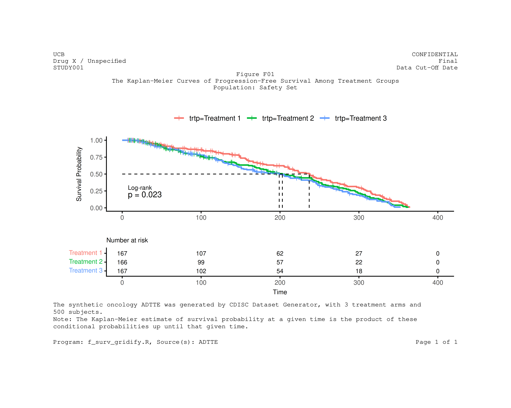
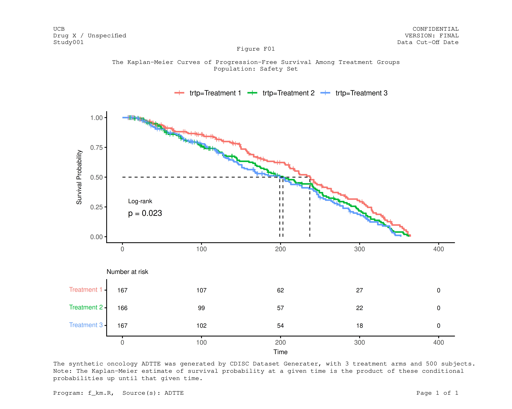

Introduction
This vignette demonstrates how to create publication-quality
Kaplan-Meier survival plots using the survminer package for
visualization, gridify for professional annotation layouts,
and tflmetaR for centralized metadata management.
The workflow covers:
- Loading and preparing ADTTE (Time-to-Event) data from CDISC-compliant datasets
- Fitting survival models and generating Kaplan-Meier curves
- Combining survival plots with risk tables
- Annotating figures with headers, titles, and footnotes using
gridify - Integrating
tflmetaRto pull annotations from external metadata files
Loading Required Packages
We begin by loading all necessary packages for survival analysis, data manipulation, and figure annotation.
library(tflmetaR)
library(gridify)
library(haven)
library(dplyr)
library(survival)
library(survminer)Loading and Preparing ADTTE Data
The Analysis Dataset for Time-to-Event (ADTTE) follows CDISC ADaM standards. Here we use a synthetic oncology dataset generated by the CDISC Dataset Generator, containing 3 treatment arms and 500 subjects.
# get addtte data ----
# synthetic adtte for oncology therapeutic area from CDISC
adtte <- read_xpt(system.file("extdata", "adam_adtte.xpt", package = "tflmetaR"))Data Transformation
We filter the data for Progression-Free Survival (PFS) analysis and prepare it for survival modeling.
tte <- adtte |>
rename(avalc = AVALU) |>
rename_with(tolower) |>
filter(paramcd == "PFS") |>
arrange(desc(trtp)) |>
relocate(usubjid, trtp, cnsr, evntdesc, avalc, aval, trta) |>
select(usubjid, trtp, cnsr, evntdesc, avalc, aval, trta)
tte$trtp <- factor(tte$trtp)Fitting the Survival Model
We create a survival object and fit a Kaplan-Meier model stratified
by treatment group (trtp).
# run survival modal ----
surv_object <- Surv(time = tte$aval, event = tte$cnsr)
fit1 <- survfit(surv_object ~ trtp, data = tte)Creating the Survival Plot
The survminer package provides ggsurvplot()
for creating publication-ready Kaplan-Meier curves with integrated risk
tables, p-values, and median survival lines.
# survial plot and table ----
ggsurv <- ggsurvplot(fit1,
data = tte, risk.table = TRUE, size = 1, # line size
pval = TRUE,
pval.size = 4,
pval.method = TRUE,
pval.method.size = 3,
fontsize = 3,
surv.median.line = "hv",
tables.theme = theme_survminer() +
theme(
axis.text.x = element_text(size = 9, color = "gray30"),
axis.text.y = element_text(size = 9, color = "gray30"),
plot.title = element_text(size = 9),
element_text(size = 9, color = "red")
)
)Customizing the Risk Table
We modify the risk table labels to display treatment group names in a more readable format.
# risk table -----
t <- ggsurv$table +
scale_y_discrete(label = c("Treatment 3", "Treatment 2", "Treatment 1"))
p1 <- ggsurvplot(fit1, data = tte, risk.table = TRUE) ## can not add to the gridify directlyCombining Plot and Risk Table
Using ggpubr::ggarrange(), we combine the survival plot
and risk table into a single figure with proper alignment and
proportions.
# ggrance the survival plot and risk table ----
p1 <- ggarrange(
ggsurv$plot + labs(x = "", y = "Survival Probability") +
scale_color_discrete() +
theme(
axis.title.x = element_text(vjust = 0, size = 9),
axis.title.y = element_text(vjust = -3, size = 9), # y axis label
axis.text.y = element_text(size = 9, color = "gray30"), # tick values
axis.text.x = element_text(size = 9, color = "gray30"),
legend.title = element_blank()
),
t + labs(y = "") +
theme(
axis.title.x = element_text(vjust = 0, size = 9),
axis.text.x = element_text(size = 9, color = "gray30")
),
heights = c(2, 1.0),
ncol = 1, nrow = 2, align = "v"
)Annotating with gridify
The gridify package provides a framework for adding
professional annotations to figures, including headers, titles,
footnotes, and page numbers. The pharma_layout_base()
function creates a layout compliant with pharmaceutical industry
standards.
Basic Gridify Example
This example demonstrates manual annotation using
gridify::set_cell() to populate each annotation field.
## --- use gridify to annotate the figure ---
fig <- gridify(
p1,
layout = pharma_layout_base(
margin = grid::unit(c(1, 1, 1.23, 1), "inches"),
global_gpar = grid::gpar(fontfamily = "Courier")
)
) |>
set_cell("header_left_1", "UCB") |>
set_cell("header_left_2", "Drug X / Unspecified") |>
set_cell("header_left_3", "STUDY001") |>
set_cell("header_right_1", "CONFIDENTIAL") |>
set_cell("header_right_2", "Final") |>
set_cell("header_right_3", paste0("Data Cut-Off Date")) |>
set_cell("output_num", "Figure F01") |>
set_cell("title_1", "The Kaplan-Meier Curves of Progression-Free Survival Among Treatment Groups") |>
set_cell("title_2", "Population: Safety Set") |>
set_cell("title_3", "") |>
set_cell(
"note",
paste0(
"The synthetic oncology ADTTE was generated by CDISC Dataset Generator, ",
"with 3 treatment arms and 500 subjects.\n",
"Note: The Kaplan-Meier estimate of survival probability at a given time ",
"is the product of these conditional probabilities up until that given time."
),
mchar = 132
) |>
set_cell("footer_left", "Program: f_surv_gridify.R, Source(s): ADTTE") |>
set_cell("footer_right", paste0("Page ", 1, " of ", 1))
print(fig)
Integrating tflmetaR for Metadata Management
The tflmetaR package enables separation of
metadata and code by storing titles, footnotes, and headers in
external spreadsheets. This approach:
- Centralizes all annotations in a single location to support audit and traceability
- Reduces code complexity and maintenance burden
- Supports regulatory compliance workflows
Loading Metadata Files
We read the titles and header information from an Excel spreadsheet.
## --- tflmetaR related code ----
# read headers, titles, and footnotes excel spreadsheet
file_name <- system.file("extdata", "st_titles.xls", package = "tflmetaR")
title_file <- tflmetaR::read_tfile(filename = file_name, sheetname = "Sheet1")
header_file <- tflmetaR::read_tfile(filename = file_name, sheetname = "Headr", validate = FALSE)
fig_number <- "Figure F01"Extracting Annotations
Using tflmetaR accessor functions, we retrieve titles,
footnotes, and header content for the specific figure.
ulheader <- tflmetaR::get_ulheader(header_file)[1, ]
urheader <- tflmetaR::get_urheader(header_file)[1, ]
titles <- tflmetaR::get_title(title_file, tnumber = fig_number)
footnotes <- tflmetaR::get_footnote(title_file, tnumber = fig_number, add_footr_tstamp = FALSE)
pgmname <- tflmetaR::get_pgmname(title_file, tnumber = fig_number)
source <- tflmetaR::get_source(title_file, tnumber = fig_number)
# convert footnote list to string
footnote_str <- paste(unlist(footnotes), collapse = "\n")Creating the Final Annotated Figure
Now we combine gridify with
tflmetaR-extracted metadata to create the final
publication-ready figure. This approach ensures that any updates to
titles or footnotes in the metadata spreadsheet are automatically
reflected in the output.
## --- re-draw graph with pulled titles and footnotes ----
fig2 <- gridify(
p1,
layout = pharma_layout_base(
margin = grid::unit(c(0.5, 1, 0.25, 1), "inches"),
global_gpar = grid::gpar(fontfamily = "Courier")
)
) |>
set_cell("header_left_1", ulheader[[1]]) |>
set_cell("header_left_2", ulheader[[2]]) |>
set_cell("header_left_3", ulheader[[3]]) |>
set_cell("header_right_1", urheader[[1]]) |>
set_cell("header_right_2", urheader[[2]]) |>
set_cell("header_right_3", urheader[[3]]) |>
set_cell("output_num", titles[[1]]) |>
set_cell("title_1", "") |>
set_cell("title_2", titles[[2]]) |>
set_cell("title_3", titles[[3]]) |>
set_cell("note", footnote_str, mch = 120) |>
set_cell("footer_left", paste0(
"Program: ", pgmname, ", ",
"Source(s): ", source
)) |>
set_cell("footer_right", sprintf("Page %d of %d", 1, 1))You can now preview the annotated figure or export the result to a
PDF file using
gridify::export_to(fig2, "f_surv_tflmetar.pdf").
print(fig2)
Summary
This vignette demonstrated a complete workflow for creating annotated Kaplan-Meier survival plots:
- Data preparation: Loading and transforming ADTTE data following CDISC standards
-
Survival analysis: Fitting Kaplan-Meier models
using the
survivalpackage -
Visualization: Creating publication-quality plots
with
survminer -
Annotation: Adding professional headers, titles,
and footnotes using
gridify -
Metadata integration: Leveraging
tflmetaRto externalize annotations for better maintainability
By combining these tools, organizations can produce regulatory-compliant figures while maintaining a clear separation between analysis code and presentation metadata.
Related Resources
Key Packages Used
| Package | Purpose |
|---|---|
survival |
Survival analysis and Kaplan-Meier estimation |
survminer |
Publication-ready survival plots |
gridify |
Professional figure annotation layouts |
tflmetaR |
Centralized metadata management |
tflmetaR Core Functions
| Function | Description |
|---|---|
read_tfile() |
Read metadata from Excel or CSV |
get_title() |
Retrieve titles and subtitles |
get_footnote() |
Retrieve footnotes |
get_ulheader() |
Retrieve upper-left header content |
get_urheader() |
Retrieve upper-right header content |